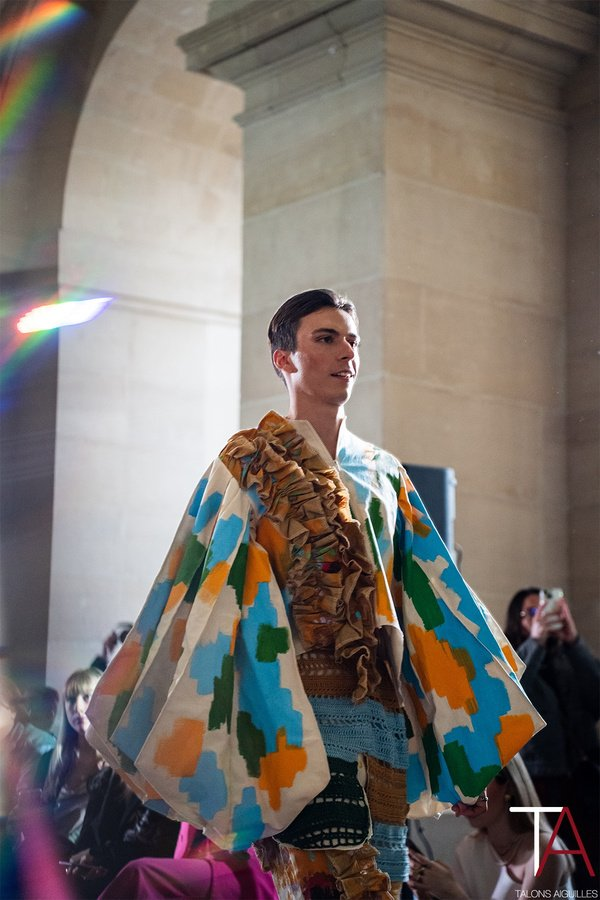
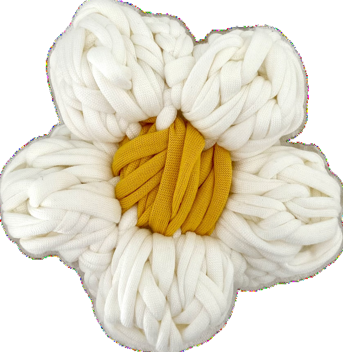
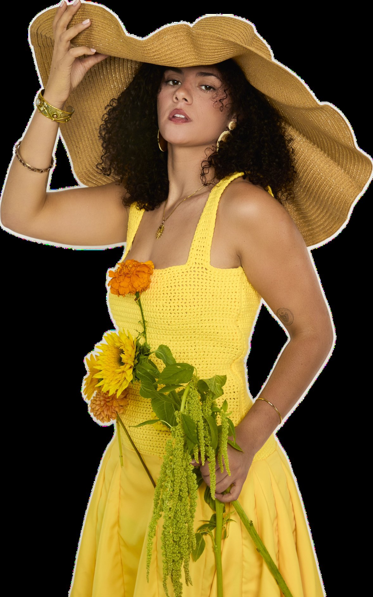
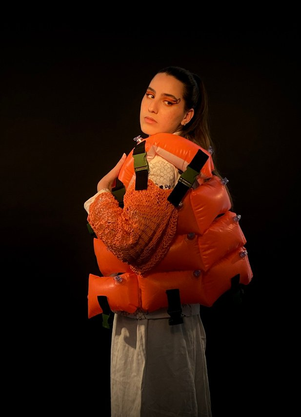
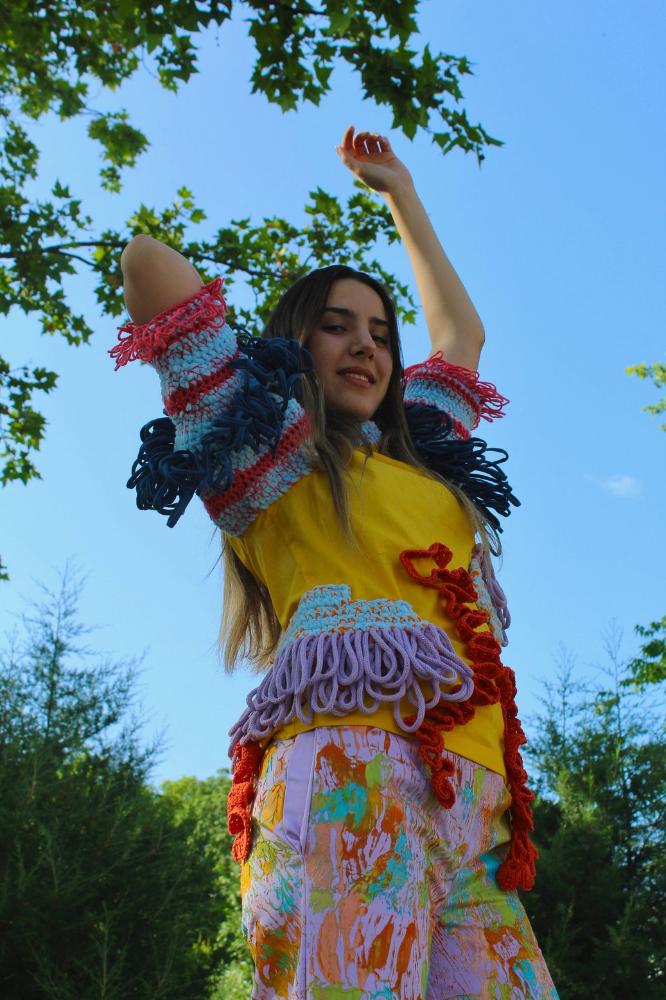
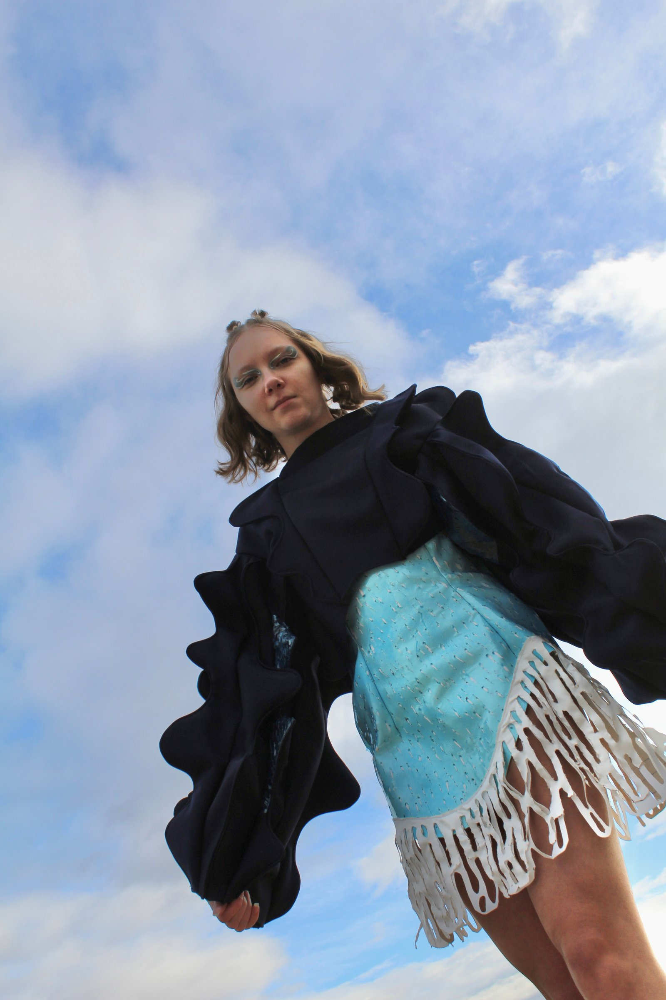
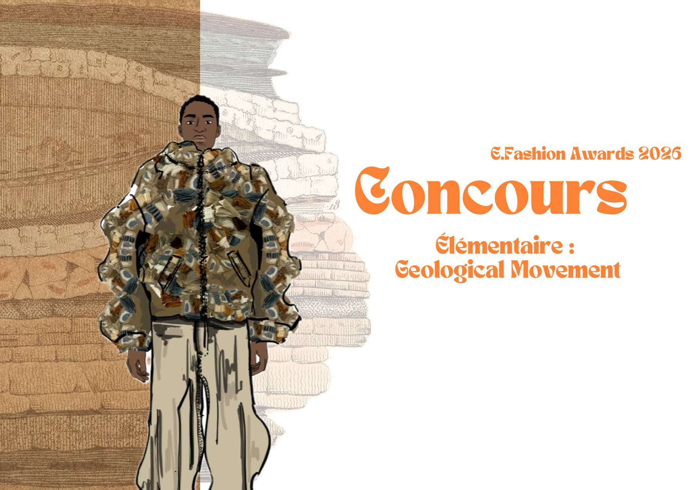

Voir le projet →

Styliste · Modéliste · Direction Artistique
Styliste · Modéliste
“Une silhouette n'est pas un vêtement.
C'est une conversation entre la main, le tissu et le geste.
Sans encore connaître le mot "design", elle savait. Très tôt, elle s'imaginait présenter ses créations à la télévision — des années plus tard, cette intuition prend vie lorsque TF1 la suit pendant la 31ème édition du concours international Jeunes Créateurs Talons Aiguilles, de la production des tenues jusqu'au défilé, en tant que finaliste.
Aujourd'hui, Marine Dubois développe un univers où le vêtement devient un langage entre art, volume et émotion. Formée à l'École de Condé, Parsons School of Design et Fashion Institute of Technology, certifiée Inside LVMH, elle façonne une signature où la matière prend l'initiative — maille, broderie, teinture naturelle, moulage.
— Marine Dubois Disponible · Juillet 2026






Gallery Players — Brooklyn, NY · Théâtre communautaire
New York, USA — Animation, transmission, projets textiles
New York, USA — Pratique quotidienne anglaise & créative
Paris — Recherches iconographiques, silhouettes, mailles
Paris — Préparation collection A/W, crochet, tricot, stylisme photo
Construction Techniques · New York
Fashion Drawing & Moodboard · New York
Direction Artistique de la Mode · Lyon
Baccalauréat STMG · Spécialité Marketing · Thann, France
Délivrée le 18 novembre 2025
«Marine nous a interpellé car elle était très solaire, très impliquée. Son travail était très original. C'est quelqu'un qui est très pictural dans l'approche. D'ailleurs elle a peint et travaillé chacune de ses œuvres, rajouté du crochet etc. C'était comme des toiles.
— Concours Talons Aiguilles · 31e édition Jury · 2024
«Marine a su parfaitement répondre aux attentes durant son stage. Elle est courtoise et polie avec ces différents interlocuteurs. Elle a su apporter de la créativité aux différentes missions confiées. Autonome — ce fut très agréable de travailler avec elle ! Bravo Marine !
— Maison Romée · Paris Convention de stage · 2024
«Un ensemble très satisfaisant. Le travail est riche et sérieux. Continuez avec le même engagement et la même énergie solaire ! Bravo ! Félicitations !!
— École de Condé · Lyon Jury Bachelor · 2024
«Tout au long de sa formation, Marine s'est distinguée par une attitude de travail exemplaire. Sérieuse, investie et constante dans ses efforts, elle a toujours fait preuve d'un grand professionnalisme dans son approche des projets. Sa capacité à s'impliquer pleinement, à respecter les exigences techniques et à aller au bout de ses intentions créatives en fait une jeune designer particulièrement fiable. Marine sait également se donner les moyens de ses ambitions, tout en restant humble et à l'écoute. Cette combinaison de détermination, de curiosité et de capacité à se remettre en question lui permettra, j'en suis convaincue, de s'intégrer avec succès dans le monde professionnel.
— Professeure de Design de Mode · École de Condé Lyon Lettre de recommandation · 2024
Témoignages réels transcrits du retour du jury concours, de la convention de stage et de la lettre de recommandation de l'École de Condé.
Disponible à partir de juillet 2026 pour des collaborations longue durée, des consultations stylisme, des projets éditoriaux, des costumes ou de la direction artistique.
« On retrouvera toujours dans mes créations cette même sensibilité : des couleurs vibrantes, des matières vivantes et des silhouettes pensées comme des émotions à porter. »
— Marine Dubois
Un univers diffusé
sur écrans, scènes & podiums.
Finaliste de la 31ème édition
du concours Talons Aiguilles.
Marine, étudiante en 3ème année de Bachelor Design de Mode à l'École de Condé Lyon, a été suivie par TF1 de la production en atelier jusqu'au défilé final. Un parcours de direction artistique, de couture et de finitions filmé en immersion.
Coulisses d'atelier · DIY couture · Inspirations mode
Portfolio visuel · Editorials · Création textile
31e édition · Finaliste
Suivie par TF1 de l'atelier au défilé. Interview vidéo École de Condé.